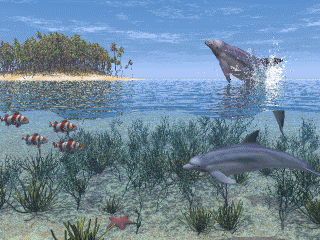
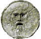

REPRODUZIR MÚSICA!
TUCUXIPOD
Olá! Você gosta de golfinhos? Se sim...
Seja muito bem-vindo ao Tucuxipod!
Esse site foi criado com o objetivo de transmitir informações confiáveis e diretas sobre os golfinhos para quem nos visita, buscando estabelecer um ambiente de aprendizado leve e divertido. Espero que você se sinta ainda mais próximo desses bichinhos incríveis e que saia daqui com um conhecimento novo, consciente de que se informar é o primeiro passo para ajudar na conservação dos golfinhos!
Dúvidas ou Sugestões?
tucuxipod@proton.me